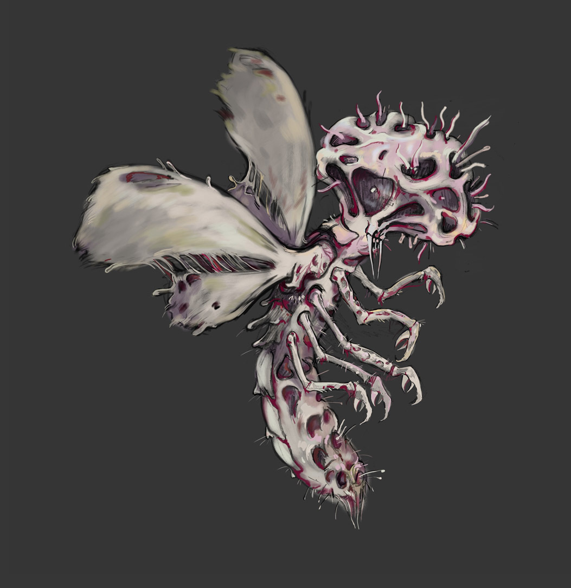

Эта таинственная раса пришельцев известна тем, что внесла однажды немалую сумятицу в научное сообщество Новой Англии. Тогда вышло так, что их следы были неоднократно описаны жителями лесистых районов Вермонта и эти сведения достигли Мискатоникского университета. Однако доказать присутствие Ми-го высоколобым скептикам было не под силу: эти существа мало того что селились в наиболее глухих и безлюдных регионах, так еще и не проявлялись на фотографиях, ибо состоят из неземной материи.
Тем не менее известно, что Ми-го на самом деле являются высокоорганизованными грибами, прилетевшими на Землю с планеты Юггот. Пусть и напоминают внешне то ли насекомых, то ли ракообразных. Их розоватые тела, в полтора метра длиной, имеют пару перепончатых крыльев-плавников, неприятную яйцеобразную фигуру с множеством усиков вместо головы, а также несколько конечностей.
Ми-го обладают наиболее развитыми умственными способностями среди всех сохранившихся живых существ, а вместе с тем — глубокими научными знаниями и продвинутыми технологиями. Они общаются с помощью телепатии и искусно проводят сложнейшие хирургические операции.
Но что особенно невероятно для постижения человеческим разумом - то, что Ми-го способны перемещать сознание на иные планеты: за пределы нашей галактики и, возможно, нашего измерения. Для этого они отделяют мозг «путешественника» от тела и помещают его в специальный цилиндр с жидкостью, к которому подключают сложные приборы, воспроизводящие его зрение, слух и речь. Установлено, что этой отвратительной процедуре неоднократно подвергались люди, но дальнейшая судьба их сознаний остается неизвестной.
Впервые упомянуты под своим именем и подробно описаны в рассказе «Шепчущий во тьме» (The Whisperer in Darkness, 1931), хотя, по сути, были придуманы немного раньше – в цикле сонетов «Грибы с Юггота» (Fungi from Yuggoth, 1929).
